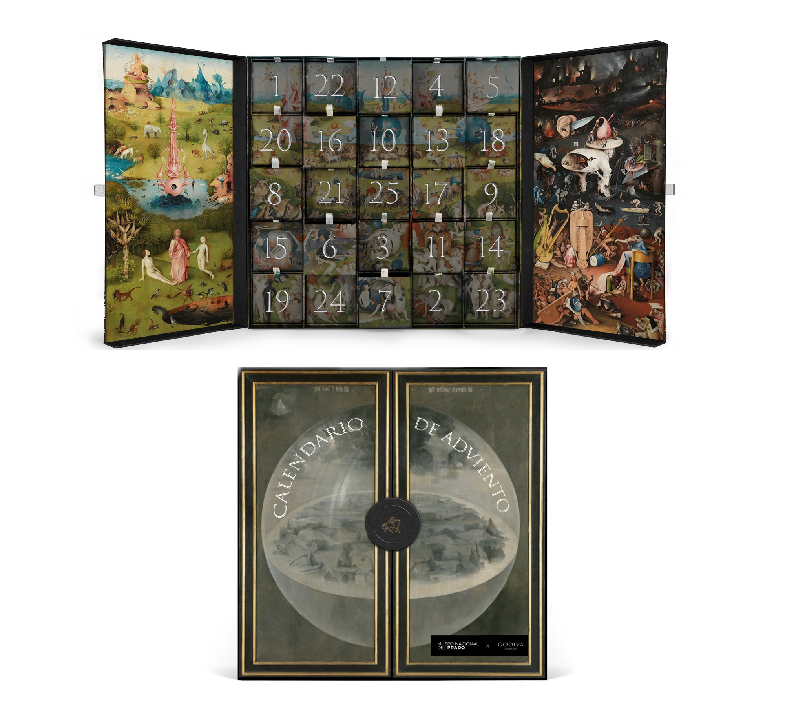
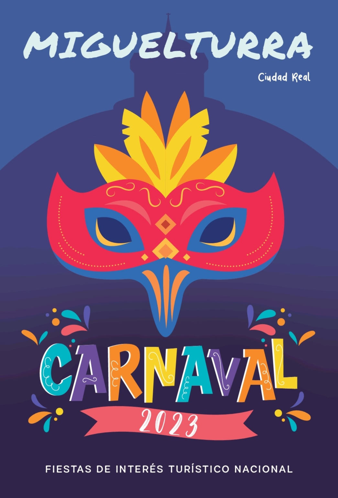
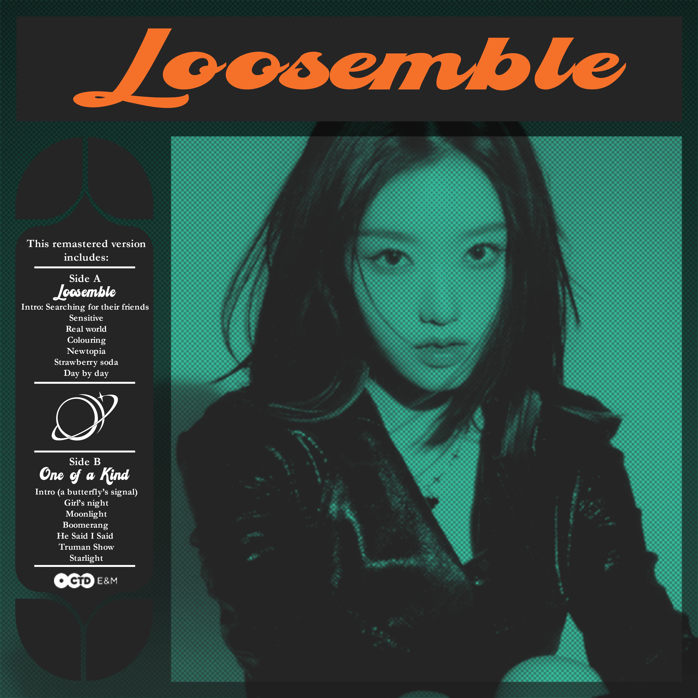
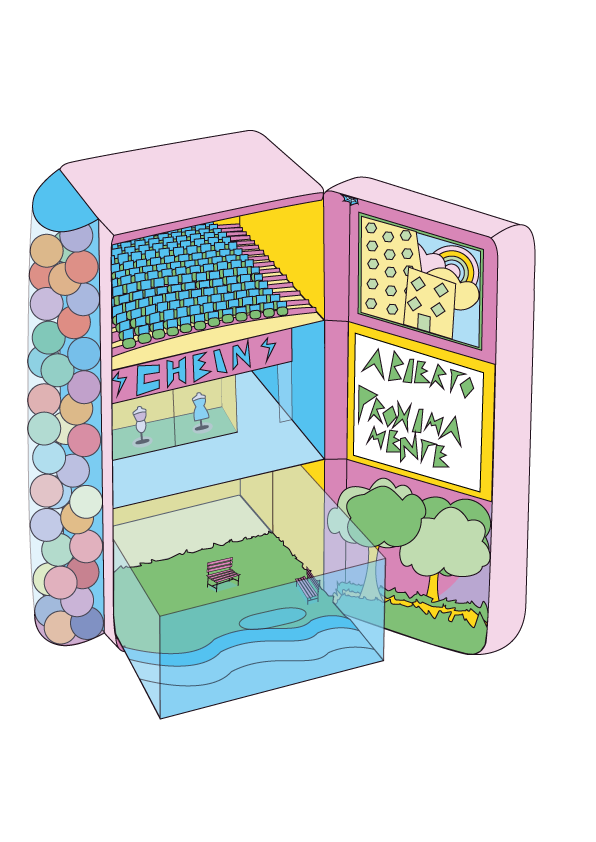
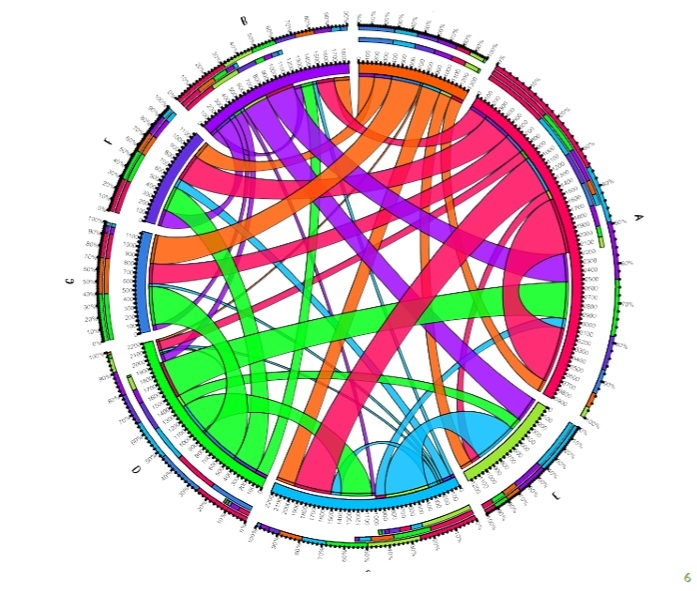

Animación cartoon donde un personaje exagera sus expresiones: ojos muy abiertos, lengua fuera y movimientos vivos. Este ejercicio explora principios fundamentales de animación como anticipación, squash & stretch y exageración.
Nuestros proyectos
A continuación puedes ver algunos de los proyectos realizados por nuestro equipo. Haz clic en cada proyecto para desplegar su descripción.

Diseño de un calendario de Adviento premium para Godiva, inspirado en el tríptico El jardín de las delicias de El Bosco. Se adapta la obra al formato de caja desplegable, respetando su composición original mientras se optimiza para un producto comercial y experiencial.

Collage digital que combina varios elementos de la cultura visual japonesa. La composición integra al personaje Nanami en primer plano, acompañado de Godzilla —representado con una máscara estilizada— y un fondo urbano de estética japonesa. El proyecto explora la mezcla de ilustración, cultura pop y paisajismo urbano mediante técnicas de integración digital.

Cartel realizado para el Carnaval de Miguelturra (Ciudad Real, España) del año 2023. El diseño emplea una máscara central de estilo vectorial y una paleta muy viva para transmitir el ambiente festivo, con tipografía lúdica y detalles decorativos tipo confeti que refuerzan la identidad del evento.
Animación de un skater realizando un truco con un estilo cartoon. Se exploran principios como timing, arco de movimiento, anticipación y follow-through para dar sensación de peso y fluidez.

Diseño de portada de vinilo inspirado en el estilo visual del K-Pop. Se emplea duotono, textura de trama y composición retro combinada con tipografías display contemporáneas.

Ilustración conceptual en la que un frigorífico se transforma en un centro comercial a varios niveles. Cada balda funciona como una planta distinta, integrando espacios, pasillos y elementos arquitectónicos dentro de la estructura del electrodoméstico. El proyecto juega con la perspectiva isométrica y el contraste entre objetos cotidianos y entornos urbanos, creando una composición imaginativa y narrativa.

Obra procesual titulada “Reproducción Anímica”, que registra las reproducciones de cantantes según el estado anímico de la persona durante un período de tiempo. La visualización contempla cinco emociones y siete artistas: los datos fueron arrojados por iTunes y recopilados a lo largo de una semana, mostrando las relaciones entre emoción y escucha mediante un diagrama circular.